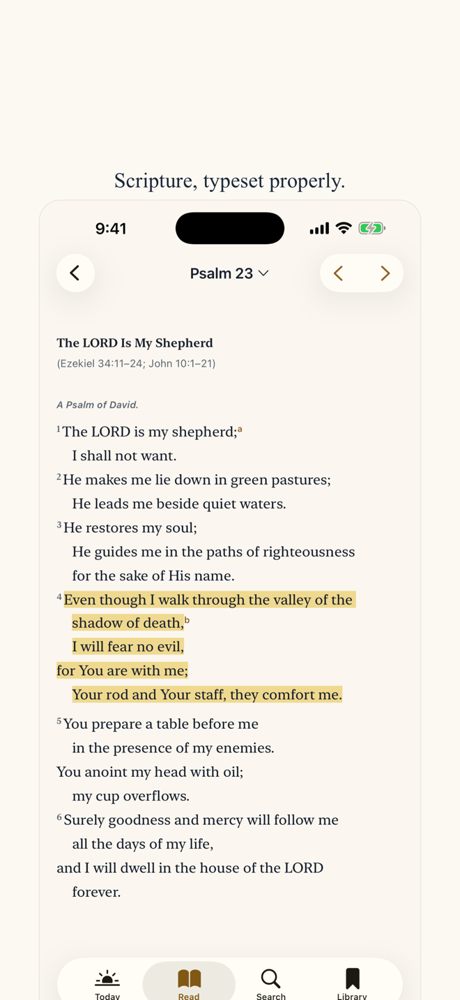
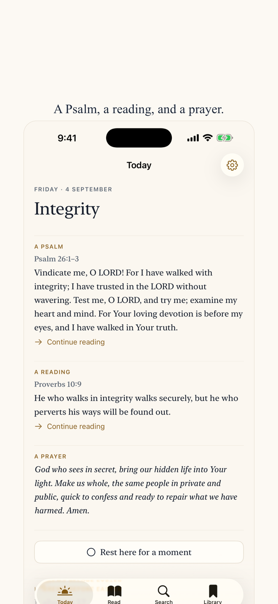

Lamp & Line
Berean Standard Bible, offline
The complete Bible, free and offline. No account, no ads, nothing collected. One Psalm, one reading, and one prayer a day, on iPhone, iPad and Apple Watch.
Free. One optional purchase, never a subscription.


The complete Berean Standard Bible, offline
No account, no feed, no advertisement, no interruption. The complete Berean Standard Bible is stored on your device, so it works on a plane, in a basement, and with every network switched off.
Typeset, not dumped on screen
Poetry keeps the lines the translators set. Prose flows as paragraphs. Verse numbers are there when you want them and quiet when you do not. Light by day, warm at night, and every text size iOS offers without a word clipped.
The Hebrew and Greek behind every word
Tap any verse to see the Hebrew or Greek behind every word: how it is said, how the translators rendered it, and its grammar in plain words. Tap a word for its dictionary entry, every way the Berean Standard Bible renders it, and every place it occurs. Part of Lamp & Line Full. The words come from the translators’ own tables, the entries from STEP Bible’s lexicons.
Find the verse
Type “John 3:16”, “Jn316”, “Psalm 23”, a phrase in quotation marks, or just the words you half remember. References resolve instantly; everything else is searched across the whole Bible in a fraction of a second, offline.
A small daily rhythm
One Psalm, one short reading, one prayer. One card a day, not a feed — the same on your iPhone, your iPad, your Home Screen, your Lock Screen, and your Apple Watch. One reminder a day, at a time you choose, or none at all.
A plan that waits for you
Take a book, a testament, or the whole Bible a few chapters at a time. There are no dates in a plan: miss a week and it is exactly where you left it, with nothing to catch up on and nothing broken.
On Apple Watch, properly
Today comes to your Apple Watch for nothing, with your phone switched off. Full opens the whole Bible there too: all 66 books, offline, not a subset and not a companion screen.
Yours, and private
Bookmarks, highlights, and notes stay on your device. Nothing you read, search for, or write is sent anywhere. There is no analytics of any kind. Export everything you have written, read it back in on another device, and delete it, at any time.
Free means free
On iPhone and iPad: the complete Bible, search, read aloud, your bookmarks and notes, Today, a reading plan (the New Testament, or the whole Bible in a year), a Paper share card, a Home Screen widget, and every accessibility feature cost nothing, for good. On Apple Watch, Today is free.
Lamp & Line Full is one purchase — no subscription — that adds word study (the Hebrew and Greek behind every word), every reading style, every widget size, every complication, the whole Bible on Apple Watch, threads between passages, phrase highlighting, every share-card design, and as many reading plans as you like.
The interface is in ten languages. The Bible text is in English: the Berean Standard Bible, public domain since 2023.